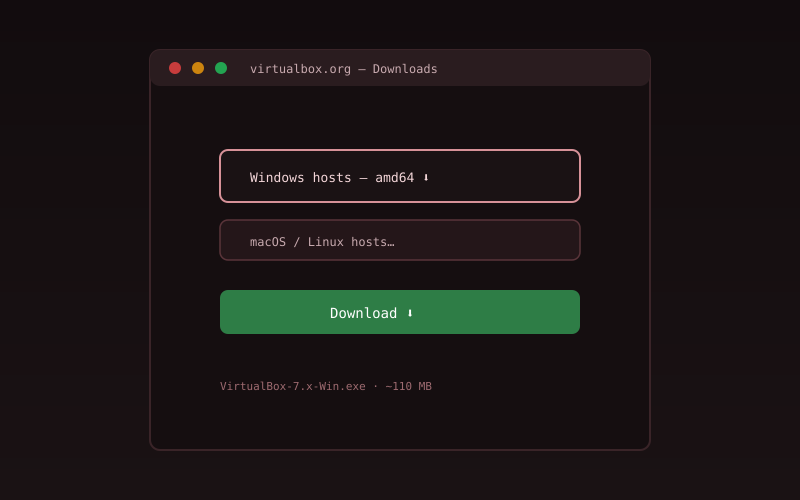
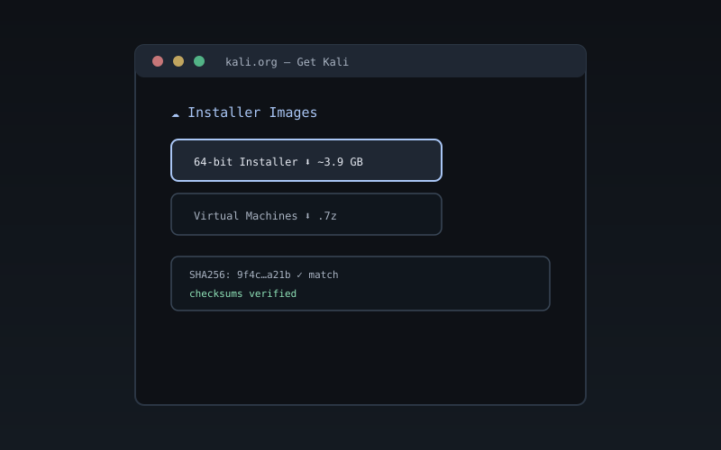
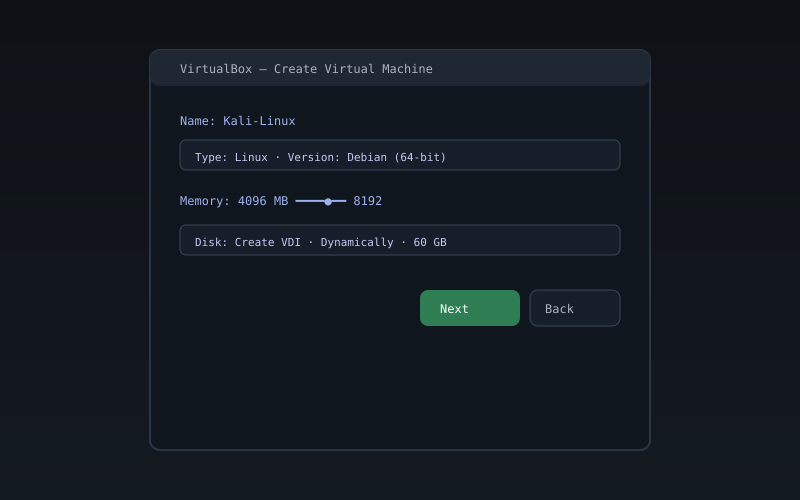
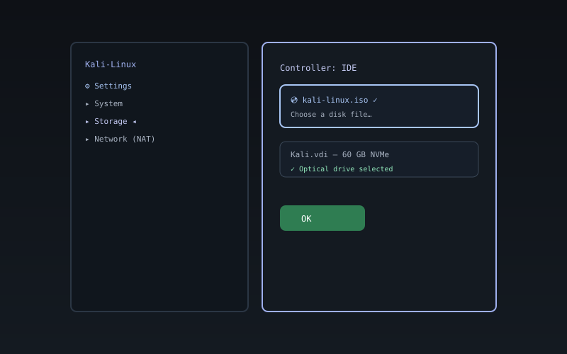
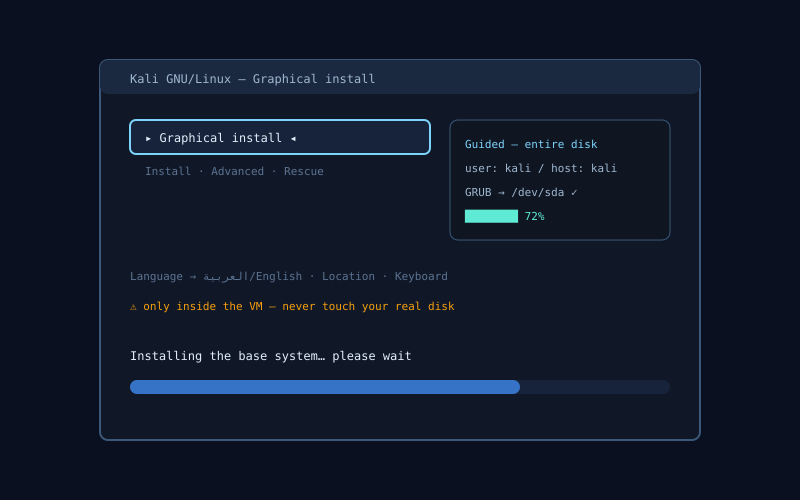
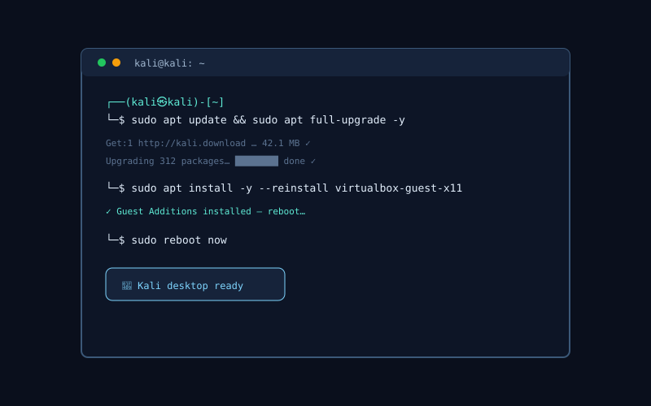

جارٍ تحديد موعد حصتك القادمة…
كيف أصل للمحاضرة؟
منصة أمن المعلومات
Information Security Platform
منصة عربية تعليمية لطلاب دبلوم أمن المعلومات — تعلّم، اختبر نفسك، وتدرّب عمليًا داخل متصفحك ودون اتصال.
منصة تعليمية وتدريبية عملية لطلاب أمن المعلومات
منصة عربية متكاملة لطلاب أمن المعلومات: تعلّم أساسيات كل مادة، راجِع المصطلحات بالبطاقات، اختبر نفسك بأسئلة عملية، وطبّق ما تعلّمته بأدوات أمنية ومعامل محاكاة حقيقية — كل ذلك يعمل داخل متصفحك وبدون إنترنت.
جديد هنا؟ ابدأ من هنا
مسار «الأساسيات» مصمم للمبتدئين — خمس خطوات قصيرة تنقلك من الصفر إلى أول اختبار.
خطوتك التالية
—
لوحة الطالب
مرحبًا بك في لوحة تعلّمك
ابدأ مسارًا أو اختبارًا وسيظهر تقدمك هنا — محفوظًا على جهازك فقط.
التقدم العام في الاختبارات
0%
لا يوجد تقدم محفوظ بعد. ابدأ بالمسار المقترح أو أول اختبار — ستظهر خطوتك التالية هنا تلقائيًا.
استكشف مسارات التعلمنظام التحفيز المحلي
المستوى 1 مستكشف
هدف الدراسة اليومي
0 / 40 XP
هدف الدراسة الأسبوعي
0 / 200 XP
سلسلة الدراسة
0
الإنجازات
0 / 9
متابعة التعلم
صُمّم وطُوّر بواسطة أحمد مطمي
مسارات التعلم
من أين تبدأ؟ إليك مساراتك
عشرة مسارات منظمة تغطي رحلتك كاملة في أمن المعلومات — من الأساسيات إلى الاختراق الأخلاقي والاستجابة للحوادث: لكل مسار مواضيع مرتبة واختبارات وأدوات عملية.
مبتدئ؟ ابدأ من هنا — خطواتك الأربع
- 1اختر مادة من «المواد» واقرأ وصفها.
- 2احفظ المصطلحات ببطاقات الفلاش السريعة.
- 3اختبر نفسك في المادة واقرأ شرح كل إجابة.
- 4طبّق بأداة تفاعلية واحدة ثم جرّب معمل المحاكاة.
شجرة المهارات
خريطة المهارات
مساراتك الحالية معروضة كشجرة مهارات: النسبة، المتطلبات، الدروس والاختبارات والمعامل، والخطوة التالية — بدون تكرار بيانات المسارات.
قائمة المهارات (بديل قابل للوصول)
كل عنصر يمثل مسارًا حقيقيًا من مسارات التعلم.
دليل الترم الحالي
لوحة الترم الحالي
خطة الترم الحالي كاملة في مكان واحد: المواد الرسمية، الجدول الأسبوعي، الساعات المعتمدة، وحلقات الوصول إلى الاختبارات والأدوات والمعامل.
الوصول إلى المحاضرات
دليل الدخول إلى المحاضرات
كل ما تحتاجه لدخول محاضرتك الحالية: جدول الأسبوع، الخطوات بالترتيب، الروابط الرسمية، وحلول أكثر المشاكل تكرارًا.
المواد الدراسية والتجميعات
مواد الترم الحالي وملفاتها
مواد الفصل الدراسي الحالي وفق الخطة الرسمية: رمز المقرر والساعات والجدول، ولكل مادة بنك أسئلة تدريبي كامل مع شرح لكل إجابة.
لا توجد مواد مطابقة — جرّب كلمة بحث أخرى أو تصنيفًا مختلفًا.
أدوات الأمن السيبراني
جرّب الأدوات مباشرة
اثنتا عشرة أداة تفاعلية تعمل بالكامل في متصفحك — من تشفير Caesar إلى تحليل JWT وحساب الشبكات.
مولّد بصمة SHA-256
احسب بصمة التشفير لأي نص فورًا، مع شبكة بصرية ملوّنة للبصمة.
—
تشفير Caesar
شفرة الإزاحة الكلاسيكية تدعم العربية واللاتينية.
3
—
محلّل JWT
فكّ رموز JWT وافحص الترويسة والحمولة وتاريخ الانتهاء.
Header
Payload
Signature
حاسبة الشبكات CIDR
قناع، نطاق، بث، وعدد المضيفين لأي عنوان IPv4.
تحليل قوة كلمة المرور
إنتروبيا، قواعد أمان، وزمن كسر تقديري — دون إرسال أي شيء للخارج.
ابدأ بالكتابة لتحليل القوة…
- 12 حرفًا على الأقل
- أحرف كبيرة وصغيرة
- رقم واحد على الأقل
- رمز خاص
- ليست كلمة شائعة
- بدون أنماط لوحة مفاتيح
- بدون متتاليات مألوفة
- بدون تكرار حرفي مفرط
مشفّرات Base64 / Hex / URL
حوّل النصوص بين الصيغ الشائعة ثنائي الاتجاه.
—
محلل Regex + مرئي
اعرض بنية النمط كرسم بياني واختبره ضد نص مع عدّاد خطوات المطابقة.
—
محاكي قواعد الجدار الناري
أضف قواعد allow/deny ثم اختبر مرور حزمة مسارًا بمسار حتى القاعدة المطابقة.
| # | إجراء | بروتوكول | وجهة | منفذ |
|---|
ماسح ثغرات (محاكاة)
افحص هدفًا معرّفًا محليًا واكتشف الثغرات بخطوراتها وحلولها المقترحة.
اختر هدفًا وابدأ الفحص.
مستنشق حزم (فك ترميز)
فك إطار Ethernet/IPv4/TCP/UDP من سداسي عشري بايتًا بايت مع خريطة أوكتِت.
ماسح منافذ (مرئي)
امسح مضيفًا على شبكتك الافتراضية وراقب حالات المنافذ open/closed/filtered.
ملعب التشفير/فك التشفير
Caesar · Vigenere · XOR · RC4 · A1Z26 · Base64 — لأغراض تعليمية فقط.
المعامل العملية
المعامل التطبيقية والتدريب العملي
أربع معامل محاكاة تعمل كاملة داخل متصفحك — من محاكاة الهجمات إلى الاستجابة للحوادث وفك الشفرات.
المختبر الهجومي
طرفية Bash وقاعدة بيانات قابلة للحقن وبناء حزم الشبكة — افهم كيف تُنفَّذ الهجمات وكيف تُمنع.
ادخل المعملالاستجابة للحوادث
محاكاة زمنية حقيقية مع لوحة SIEM وتحليل الخط الزمني وتحديات تحديد السبب الجذري.
ادخل المعملمختبر التشفير
فيجينير وإنجما وRSA خطوة بخطوة وتحليل التردد — شاهد خوارزميات التشفير تعمل أمامك.
ادخل المعملتحديات CTF
سيناريوهات اختراق مصغّرة (SQLi، فحص منافذ، DDoS) عبر طرفية أوامر — احل وتعلّم.
ادخل المعملالبطاقات التعليمية
راجع المصطلحات بالبطاقات
اضغط على أي بطاقة لقلبها — مصطلح أمني بالعربية مقابل معناه بالإنجليزية مع شرح موجز.
عرض كل البطاقات (18)
لا توجد بطاقات مطابقة لبحثك.
الاختبارات التجريبية
اختبر نفسك في كل مادة
أسئلة لكل مادة مع شرح فوري لكل إجابة، وضع مؤقّت اختياري، وحفظ تلقائي للنتائج.
عرض بنوك الأسئلة
💡 اختر مادة للبدء — يمكنك استكمال محاولة سابقة أو إعادة الاختبار من الصفر.
معملك الافتراضي
ثبّت كالي لينكس على VirtualBox
دليل مصوّر خطوة بخطوة: من تحميل البرامج الرسمية إلى أول تشغيل محدَّث — داخل جهاز افتراضي آمن لا يمسّ نظامك الحقيقي.
-
معالج 64-بت
معالج حديث 64-بت مع تفعيل المحاكاة الافتراضية VT-x / AMD-V من إعدادات الـ BIOS.
-
ذاكرة 4GB على الأقل
نخصّص 4GB للجهاز الافتراضي، فاحرص أن يملك جهازك 8GB أو أكثر ليعمل النظامان معًا بسلاسة.
-
مساحة 60GB فارغة
قرص افتراضي ديناميكي بحدّ أقصى 60GB — يستهلك من قرصك الحقيقي بقدر ما يستخدمه كالي فعلًا.
-
اتصال إنترنت
لتحميل VirtualBox (نحو 110MB) وصورة كالي (نحو 4GB) ثم تحديثات أول تشغيل.
تحميل VirtualBox
الموقع الرسمي virtualbox.org — اختر نسخة نظامك.
تحميل صورة Kali
الموقع الرسمي kali.org — نسخة Installer بمعمارية 64-bit.
أو: صورة VirtualBox الجاهزة
قسم Virtual Machines في صفحة kali.org — جهاز جاهز يُستورد مباشرة.
التحقق من البصمة SHA256
قارن بصمة ملفك بما تنشره kali.org قبل التثبيت.
-

رسوم توضيحية للشرح — ليست لقطات حقيقية ثبّت VirtualBox
حمّله من موقعه الرسمي وثبّته بالخيارات الافتراضية، ووافق على تعريفات الشبكة التي تمنح أجهزتك الافتراضية الإنترنت.
-

رسوم توضيحية للشرح — ليست لقطات حقيقية حمّل Kali وتحقق من سلامتها
حمّل نسخة Installer بمعمارية 64-bit من kali.org، ثم قارن بصمتها بالقيمة المنشورة.
certutil -hashfile kali-linux.iso SHA256 -

رسوم توضيحية للشرح — ليست لقطات حقيقية أنشئ جهازًا افتراضيًا جديدًا
اختر New وسمِّه Kali-Linux: النوع Linux والإصدار Debian بمعمارية 64-bit، الذاكرة 4096MB، وقرص VDI ديناميكي بحدّ أقصى 60GB.
-

رسوم توضيحية للشرح — ليست لقطات حقيقية وصّل ملف الـ ISO والشبكة
من Settings ← Storage حدّد ملف الآيزو لمحرك الأقراص، وتأكد أن Network على وضع NAT.
-

رسوم توضيحية للشرح — ليست لقطات حقيقية ثبّت النظام بالتثبيت الرسومي
اختر Graphical install وتابع اللغة والحساب، واختر Guided — use entire disk (قرص الجهاز الافتراضي فقط)، وثبّت GRUB على /dev/sda.
-

رسوم توضيحية للشرح — ليست لقطات حقيقية أول تشغيل: حدّث النظام
افصل الآيزو وأعد التشغيل، ثم نفّذ التحديث الكامل من الطرفية.
sudo apt update && sudo apt full-upgrade -y -
رسوم توضيحية للشرح — ليست لقطات حقيقية ثبّت إضافات الضيف Guest Additions
تمنحك ملء الشاشة والحافظة المشتركة — ثبّتها ثم أعد التشغيل.
sudo apt install -y --reinstall virtualbox-guest-x11 -
رسوم توضيحية للشرح — ليست لقطات حقيقية لمسات أخيرة: لقطة وشبكة
خذ لقطة Snapshot للجهاز وهو سليم لتعود إليها متى كسرت شيئًا أثناء التعلّم.
مشاكل شائعة وحلولها
- خطأ VT-x / AMD-V غير مفعّلفعّل Virtualization من إعدادات BIOS/UEFI ثم احفظ وأعد التشغيل.
- شاشة سوداء عند الإقلاعفعّل EFI من Settings ← System وزد ذاكرة الفيديو إلى 128MB.
- الدقة صغيرة ولا تملأ الشاشةثبّت إضافات الضيف (الخطوة 7) ثم أعد التشغيل.
- الجهاز بطيء جدًاامنح الجهاز معالجين وتأكد أن ذاكرتك الحقيقية 8GB أو أكثر.
- لا إنترنت داخل كاليتأكد أن Network على وضع NAT وأن الكابل الافتراضي موصول.
تذكير أخلاقي: أدوات كالي للتعلم على أنظمة تملك إذنًا صريحًا باختبارها فقط.
متابعة التعلم
تقدمك في المنصة
نتائج اختباراتك وأفضل درجاتك محفوظة على جهازك فقط — تابع من حيث توقفت متى شئت.
أدوات الطالب
أدوات الطالب
احسب معدلك التراكمي وتوقّع ما تحتاجه، وصدّر جدول محاضراتك إلى تقويمك، وسجّل ساعات دراستك — كل ذلك على جهازك فقط.
مختبر الحوادث + التحدي (CTF)
قائد الاستجابة للحوادث
محاكاة حقيقية: تستقبل تنبيهات هجمات (SQLi، فحص منافذ، DDoS، تشفير)، وتتعامل معها عبر طرفية أوامر — حلّل، خفّف، ثم استخرج العَلَم.
🛰️ تجهيزاتُ رصد الشبكة رصدت نشاطًا خبيثًا في نطاقات متعددة. اختر سيناريو واحبِ اللغز — كل سيناريو مسجّل يتطلب أسلوب تحليل مختلف.
sec-lab > ir-console
اكتب help للأوامر و hint لتلميح (يكلف نقاطًا).
المختبر الهجومي — محاكاة حقيقية
مختبر الهجوم والاختراق
محاكاة محلية بالكامل: طرفية Bash مع قاعدة بيانات قابلة للحقن، وبناء حزم الشبكة بالمجاميع الاختبارية، ومخابر OWASP التفاعلية داخل قسم الألعاب.
🖥️ Bash + SQL Lab
نفّذ أوامر بيس أو استعلامات SQL ضد جدول students — ثم جرّب حقن ' OR 1=1 -- لرؤية الأثر، وتعلّم كيف تحول المعاملات (parameterization) دونها.
bash > sql-lab
students(id, name, course, grade) مثال SQL: select * from students where course='networks' حقن ضار: select * from students where id='1' OR 1=1 --
🌐 NetLab — بناء حزم الشبكة
ابنِ حزمة TCP/UDP بمرورها بعقد موجّهات، وشاهد المجموع الاختباري (checksum) يُحسب خطوة بخطوة والمُعامل (TTL) يُنقص.
الاستجابة للحوادث — تدريب عملي
مركز الاستجابة للحوادث
محاكاة زمنية حقيقية + لوحة SIEM مبسطة + تحليل خط زمني (kill-chain) + تحديات تحديد السبب الجذري، مع فريق افتراضي يقدّم التلميحات.
| الوقت | المصدر | الوجهة | المستخدم | النوع | الخطورة | المرحلة |
|---|
soc > live-incident
👥 فريق الاستجابة
مركز تعلم التشفير
مختبر التشفير التفاعلي
شفرات تاريخية (فيجينير، إنجما)، RSA خطوة بخطوة، دورة DES الأولى بتنسيقاتها الحقيقية، تحليل التردد، وإثبات تصادم التجزئة — كلها داخل متصفحك.
🔁 فيجينير
—
🎛️ إنجما
—
🔢 RSA خطوة بخطوة
🔷 دورة DES الأولى
📊 تحليل التردد
💥 تصادم التجزئة
بحث بأسلوب عيد الميلاد عن نصّين مختلفين يشتركان في نفس بصمة FNV-1a (32 بت) — دليل عملي على أن الدوال المخفِّضة ليست مفتاحية.
مبدأ الدفاع في العمق
ثلاث طبقات تتحرك مع تمريرك
الحماية ليست ضابطًا واحدًا: كل طبقة هنا تتحرك بسرعة مختلفة مع تمريرك — الأبعد أبطأ، والأقرب أسرع. تسقط طبقة واحدة، فتبقى التي بعدها.
ثلاث طبقات · ثلاث سرعات
-
المحيط والشبكة
البوابة النارية، تقسيم الشبكة، والوصول الآمن عن بُعد — أول طبقة يقابلها المهاجم.
-
المضيف والنظام
التحديثات، تصغير سطح الهجوم، أقل صلاحية ممكنة، والتسجيل — ما يحدّ من أثر الاختراق الأول.
-
البيانات والهوية
التحقق متعدد العوامل، التشفير، والنسخ الاحتياطي — آخر خط دفاع وأهمّه لأنه يحمي القيمة نفسها.
تأثير بصري تعليمي فقط: عند تفعيل «تقليل الحركة» في نظامك تتوقف الطبقات تمامًا ويعمل القسم بتمرير عادي.
الحركة متوقفة الآن — تفضيلك «تقليل الحركة» مُحترم.
عن المنصة
لماذا هذه المنصة؟
منصة عربية لطلاب دبلوم أمن المعلومات تجمع بين التعليم والتدريب العملي — تعلّم المادة نظريًا ثم طبّقها بالأدوات والمعامل.
منصة عربية متكاملة لطالب دبلوم أمن المعلومات: المحتوى النظري للمواد، أدوات عملية، معامل محاكاة، ومساعد ذكي يجيب من محتوى المنصة — كل ذلك يعمل محليًا وفي وضع عدم الاتصال.
- محتوى منظملكل مادة: تجميعة، ملخصات، وبنك أسئلة جاهز للطباعة.
- اختبارات ذكيةشرح فوري لكل إجابة، تتبّع أفضل نتيجة، واستكمال المحاولة السابقة.
- يعمل دون إنترنتتقنية PWA — ثبّت المنصة على هاتفك واستخدمها بدون اتصال.
- خصوصية كاملةلا حسابات ولا تتبّع — نتائجك تُحفظ على جهازك فقط.
- تدريب عمليمعامل محاكاة للهجمات والاستجابة للحوادث وتحديات CTF داخل المتصفح.
- مساعد ذكييجيب عن أسئلتك من محتوى المنصة نفسها — في أي وقت وبدون إنترنت.
تواصل معنا
سؤال أو اقتراح؟
نسعد بملاحظاتك ومساهماتك في المحتوى — أرسل رسالتك وسنعود إليك بأسرع وقت.
motmi757@gmail.com